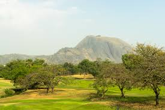
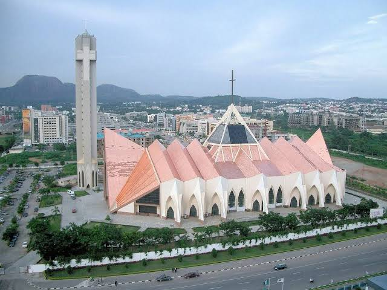
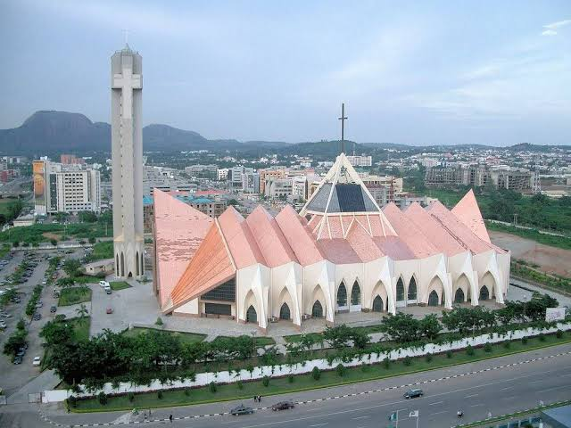

Introduction
Abuja, the capital city of Nigeria, is a modern and vibrant metropolis that serves as the political and administrative center of the country. Established in the 1980s to replace Lagos as the capital, Abuja is known for its well-planned infrastructure, beautiful landscapes, and cultural landmarks. As one of the fastest-growing cities in Africa, Abuja is a hub for both government and business activities, making it an important destination for visitors.
Geography and Climate
Located in the center of Nigeria, Abuja is bordered by Niger, Kaduna, Nasarawa, and Kogi States. The city is situated within the Federal Capital Territory (FCT) and is characterized by a mix of rolling hills, plateaus, and lush vegetation. The climate is tropical, with distinct wet and dry seasons. The rainy season typically lasts from April to October, while the dry season, marked by the harmattan winds, spans from November to March. The average temperature ranges from 22°C to 30°C throughout the year.
Culture and People
Abuja is a melting pot of cultures, with people from all over Nigeria and beyond making the city their home. The city is known for its cosmopolitan atmosphere, with a blend of traditional and modern influences. Although there is no dominant ethnic group in Abuja, the Gwari people are indigenous to the region. The city's diverse population celebrates various cultural festivals and events, reflecting the rich heritage of Nigeria's many ethnic groups.
Economic Activities
As the capital city, Abuja's economy is largely driven by government and administrative activities. However, the city has also become a thriving business hub, attracting investments in sectors such as real estate, construction, telecommunications, and finance. The presence of international organizations, embassies, and multinational corporations further boosts Abuja's economic profile. Additionally, the city has a growing hospitality industry, with numerous hotels, restaurants, and entertainment venues catering to both locals and visitors.
Tourist Attractions
Abuja offers a variety of attractions that showcase its natural beauty, cultural heritage, and modernity. The Aso Rock, a prominent natural landmark, provides stunning views of the city and is a popular spot for hiking and sightseeing. The Nigerian National Mosque and the Nigerian National Christian Centre are architectural marvels that symbolize the religious diversity of the country. Other notable attractions include the Millennium Park, the largest public park in Abuja, and the National Children's Park and Zoo, which is a favorite for families. The city also hosts several cultural and artistic events, such as the Abuja International Film Festival and the Abuja Carnival.
Education and Innovation
Abuja is home to several prestigious educational institutions, including the University of Abuja, the Nigerian Law School, and the African University of Science and Technology. These institutions contribute to the city's reputation as a center for learning and innovation. The city's educational landscape is complemented by various research institutes and think tanks that focus on policy development, governance, and technology.
Aso Rock
Aso Rock is a massive monolith that stands majestically in Abuja, the capital city of Nigeria. Rising about 400 meters above sea level, Aso Rock is one of the most prominent geographical features in the region and holds great political and cultural significance. It is home to Nigeria’s most important political buildings, including the Presidential Villa, Nigerian National Assembly, and the Supreme Court. While climbing Aso Rock is not permitted due to its proximity to government buildings, visitors can admire its towering beauty from nearby viewpoints, making it a must-see landmark when visiting Abuja.
National Mosque
The National Mosque, officially known as the Nigerian National Mosque, is an iconic religious landmark located in the heart of Abuja. Built in 1984, this magnificent mosque is a symbol of the country's Islamic faith and features impressive architecture, including a large golden dome and towering minarets. The mosque is open to both worshippers and visitors, offering guided tours that allow tourists to admire its intricate interior design and learn about Nigeria’s rich Islamic history. The National Mosque is not only a place of worship but also a cultural and spiritual center that plays a significant role in the religious life of Abuja.
National Christian Centre
 

The National Christian Centre, also known as the National Church of Nigeria, is a striking architectural masterpiece located in Abuja. The church was completed in 2005 and serves as the primary place of worship for Christians in the nation’s capital. Its unique design, featuring a triangular structure and impressive stained-glass windows, makes it one of Abuja’s most recognizable buildings. The church hosts major national Christian events and services, including interdenominational prayers and celebrations. Visitors are welcome to explore the peaceful ambiance of the National Christian Centre, which stands as a symbol of unity and spiritual faith in Nigeria.
Conclusion
Abuja is a dynamic city that embodies the spirit of modern Nigeria. With its strategic location, vibrant culture, and growing economy, Abuja is a must-visit destination for anyone looking to experience the heart of the nation. Whether you're interested in exploring its natural wonders, learning about its history, or engaging in business opportunities, Abuja offers something for everyone.